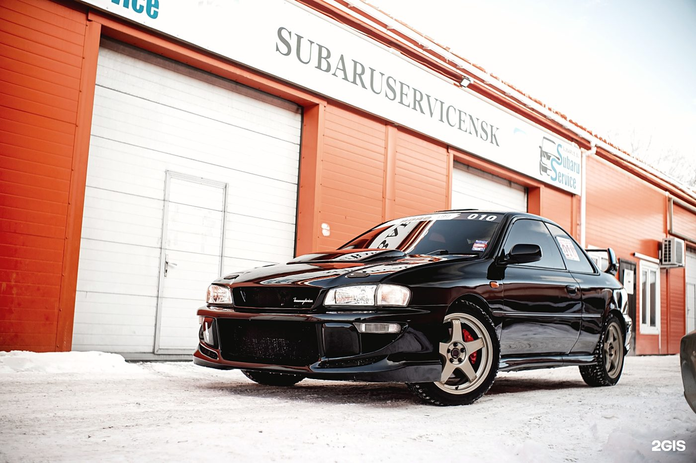
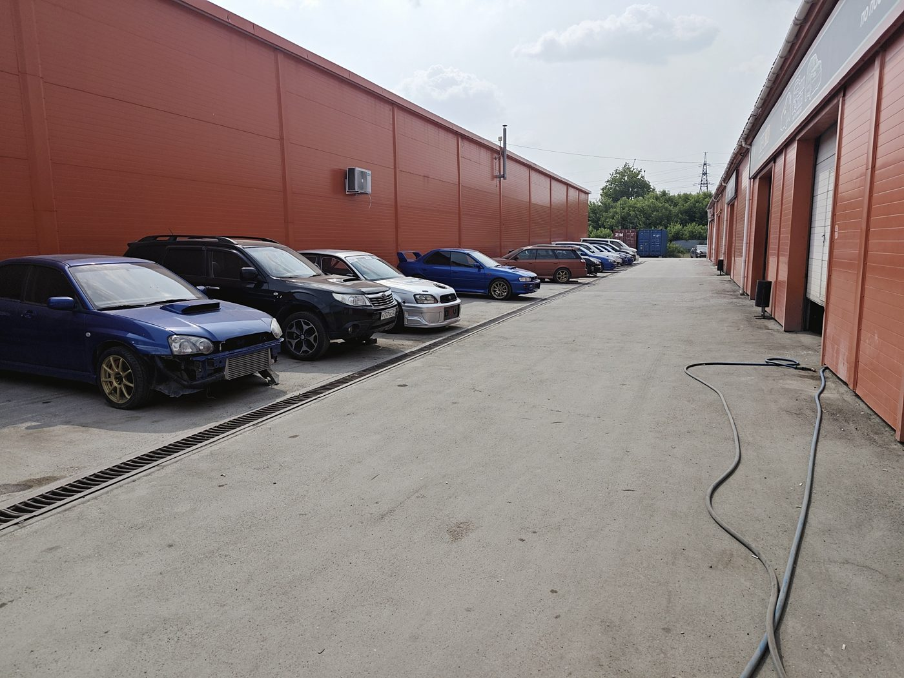
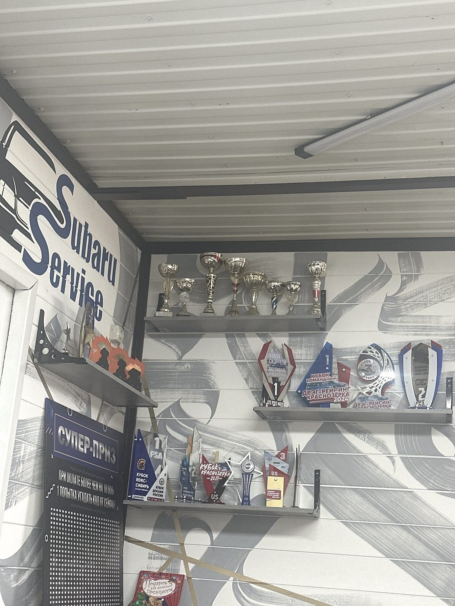
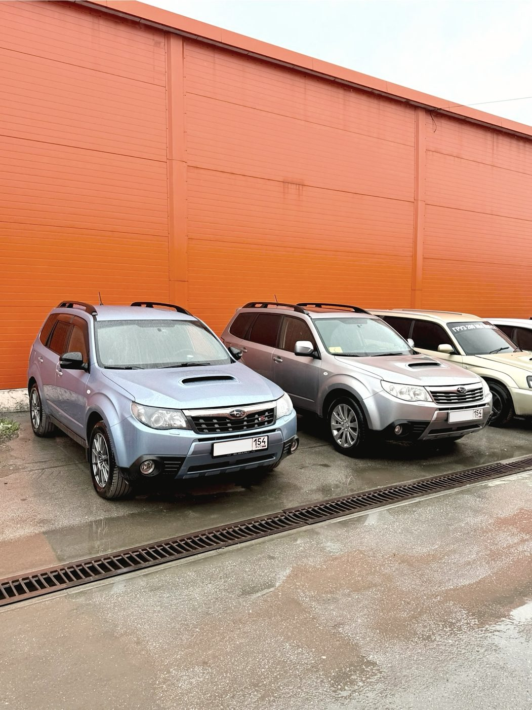
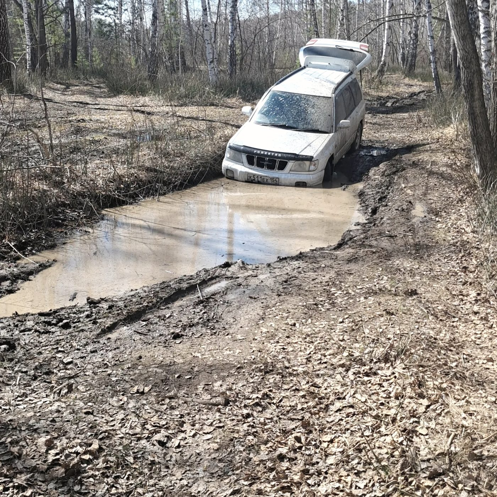
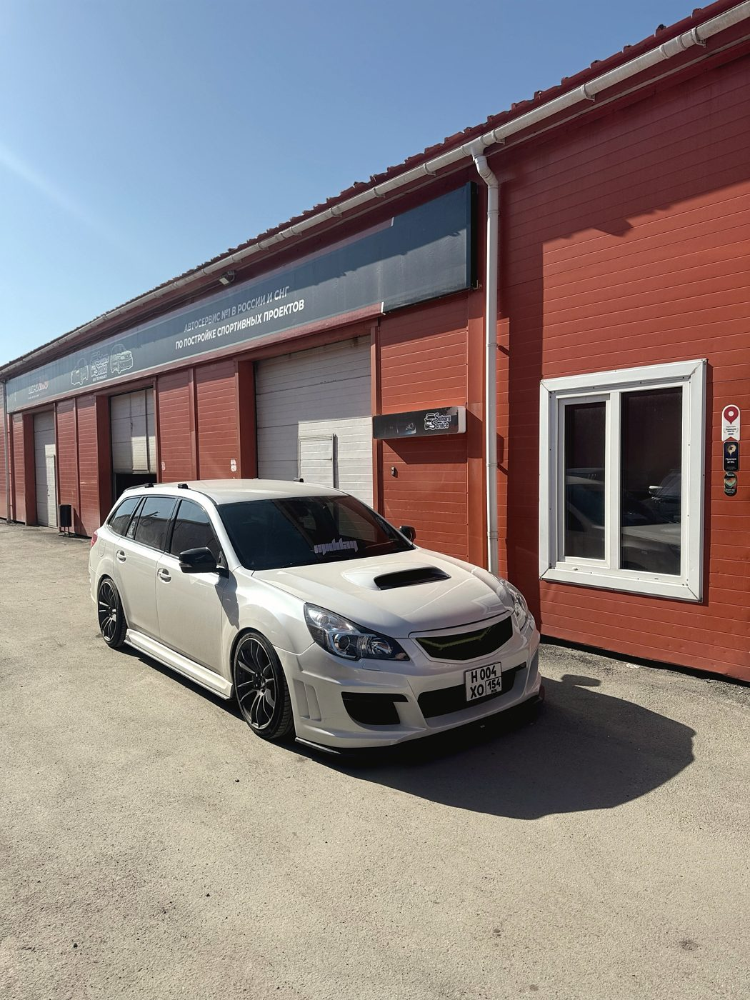
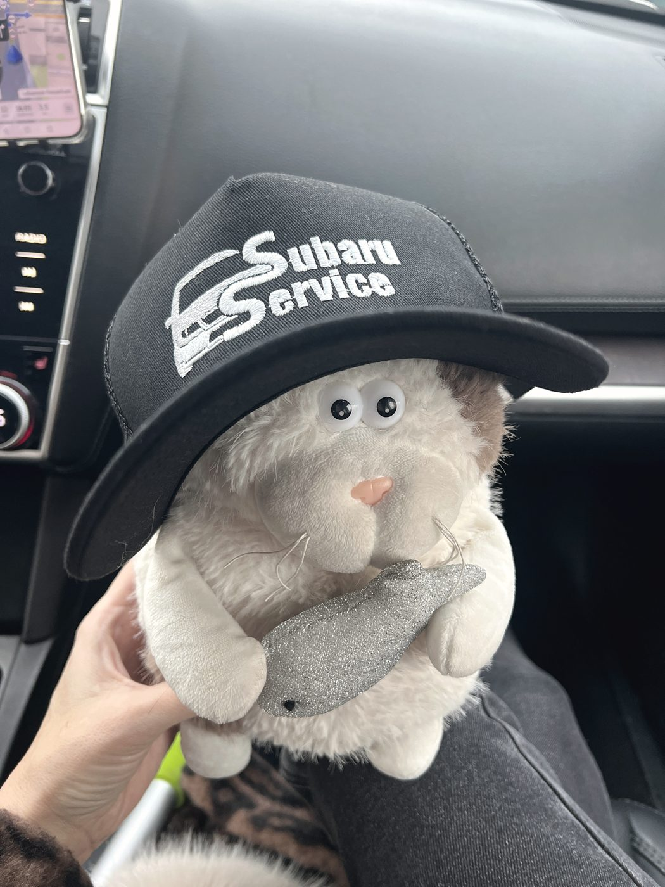

Специализированный сервис Subaru · Сибиряков-Гвардейцев, 47 к9 · Новосибирск
Здесь занимаются
только Subaru.
Больше ничем
Оппозитные моторы, полный привод, свои болячки по годам и кузовам — мастер слышит их с полуоборота, потому что не отвлекается на остальные марки. Контрактные запчасти с аукционов Японии и собственный разбор Subaru.

Почему сюда
Шесть звёзд — шесть причин
Subaru названа по Плеядам: шесть звёзд в рассеянном скоплении. Причин ехать в профильный сервис, а не к универсалу, тоже ровно шесть — и все они про то, чего у универсала нет.
Знают болячки наизусть
Прокладки, вкладыши, приводы, редукторы — по каждому поколению известно, что и когда начинает шуметь. Диагностику часто ставят на слух.
Оппозит — не экзотика
Мотор, до которого в обычном сервисе неудобно добираться, здесь разбирают каждую неделю. Это разница в часах работы, а значит и в чеке.
Свой разбор Subaru
Деталь, которой нет в продаже новой, часто стоит на разборе в соседнем боксе. Не нужно ждать поставку месяц.
Аукционы Японии
Контрактные узлы везём напрямую. Для машин, которых официально в стране не продавали, это единственный вменяемый источник.
Свои электрики
Проводка, блоки, прошивки — то, от чего чаще всего отказываются и советуют «ехать к дилеру».
Тюнинг без самодеятельности
Выхлоп, подвеска, мотор, обвесы. Советуют, что реально даст результат, а что просто заберёт деньги.
Запчасти
Три источника
на одну деталь
На каждую позицию обычно есть выбор из трёх вариантов. Разницу в цене и ресурсе объясняем — решаете вы.
Новая заводская деталь. Дольше по срокам и дороже, но с предсказуемым ресурсом. Нужен, когда экономить нельзя.
Снятый с донора узел с реальным малым пробегом, привезённый с аукциона. Часто лучше нового неоригинала и заметно дешевле.
Наш склад Subaru прямо здесь. Есть на месте — поставим сегодня, без ожидания доставки.
«Огромный выбор запчастей, как контрактных, так и новых оригинальных, либо хороших дубликатных. Запчасти для тюнинга тоже подберут и посоветуют» — из отзыва Константина Толоконникова.
Работы
Что делаем
Диагностика
Сканером и на слух. По звуку мастер отсекает половину вариантов за первые минуты — на профильных машинах это работает.
Оппозитные двигатели
Ремонт бензиновых моторов Subaru: прокладки, ГРМ, поршневая, течи, вкладыши. Атмосферные и турбо.
Трансмиссия и редукторы
Полный привод — сильная сторона машины и частая статья ремонта. Редукторы, приводы, раздатка.
Ходовая часть
Стойки, рычаги, сайлентблоки, пневмоподвеска. Проточка тормозных дисков вместо замены комплекта.
Рулевые рейки
Ремонт узла: течь, стук, закусывание. Не только замена в сборе.
Замена масла и ТО
По регламенту с учётом реального пробега и того, как машину эксплуатируют.
Электрика и сигнализации
Проводка, датчики, блоки управления, установка и ремонт сигнализаций, стартеры и генераторы.
Тюнинг
Выхлоп, подвеска, мотор, обвесы и спойлеры, врезка люка, хромирование.



Отзывы · 4,8 из 5 по 332 оценкам в 2ГИС
«Купил Субару из-за наличия данного сервиса в НСК»
Николай Коперник · 1 июля 2026
Если у тебя Субару, не стоит думать о выборе сервиса. Любой вопрос — плановое ТО, тюнинг, заправить кондиционер или просто проконсультироваться — ответят и помогут. Постов для ремонта много, долго ждать не приходится. В команде грамотные электрики, которые решают даже супер сложные вопросы.
Константин Толоконников · 1 июля 2026
Обращался с проблемой — мастер по диагностике определяет её по звуку. Полчаса, и проблемы нет. Супер.
Владимир Сахаров · 29 июня 2026



Контакты
Сибиряков-Гвардейцев, 47 к9
Кировский район, Новосибирск
Сб, Вс — выходные